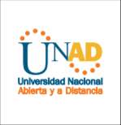

|
Objetivos:
Crear un OVA (Objetos Virtuales de Aprendizaje) y un OVI (Objetos visuales de Información) con el fin de de proveer recursos de aprendizaje para dinamizar estrategias de aprendizaje.
Tematica: SECTION, ASIDE, FOOTER, ARTICLE |
 |